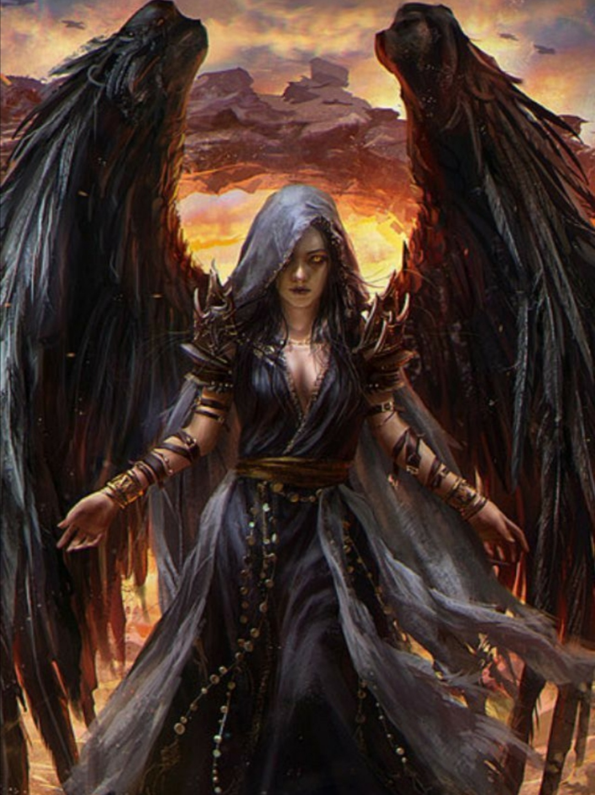

Büyücü sınıflar içinde karanlık sanatlara ve ölüm büyülerine en yakın olan sınıftır. Bütün büyücü sınıflarda olduğu gibi bu sınıfta da büyülerin etkinliği için zeka, saldırılardan kolay kaçabilmek için ise çeviklik çok önemlidir. Irk seçimi buna dikkat edilerek yapılmalıdır.
Seviye 1
Hançer: Hançer kullanabilme yeteneğidir.
Kırbaç: Kırbaç kullanabilme yeteneğidir.
Zayi: Dövüş sırasında anlık kaybolup yeniden belirmedir.
Anımsa: Ait olduğunun dinin tapınağına dönüş komutudur. Seviye 10a kadar geçerlidir. (anımsa)
Parşömen: Parşömen okuma yeteneğidir.(oku yazdıktan sonra okunacak parşömenin adı yazılır.)
Tılsımlar: Büyü kullanabilme ile ilgili bir yetenektir.(otomatik)
Değnekler: Değnek kullanabilme yeteneğidir.(otomatik)
Seviye 5
Pazarlık: Alışverişlerde alırken ucuza alma, satarken pahalıya satma yeteneğidir. Bu yetenek kullanılarak dükkan sahibi fiyat konusunda ikna edilmeye çalışılır. Hırsızlar pazarlık konusunda doğuştan yeteneklidirler.(otomatik)
Seviye 6
Meditasyon: Hızlı iyileşmeye benzer. Yöntem olarak uyurken veya dinlenirken zihin yoğunlaşması kullanılır ve büyü gücünün (mana) yenilenmesi sağlanır.(otomatik)
Seviye 9
Hızlı iyileşme: Yaşam puanının daha hızlı yenilenmesini sağlayan yetenek. Bu yetenek yürürken de, dinlenirken de, uyurken de çalışır.(otomatik)
Seviye 10
Büyü tanıma: Odada yapılan büyülerin isimlerini görebilmeyi sağlayan yetenek.(otomatik)
Seviye 21
Trans: İyileşmenin hızını arttıran yetenek.(otomatik)
Seviye 34
İkili hamle: Dövüşlerde bir turda iki hamle yapabilmek için gerekli yetenek. (otomatik)
Seviye 45
Çıplak el: Silahsızken de etkili dövüşebilmeyi sağlayan yetenek. (otomatik)
Seviye 48
Kırbaçla: Silah olarak bir kırbaç kullanırken, kırbacı savurarak düşmanın kaçmasını engelleyecek şekilde zarar verme yeteneği.
Seviye 2
Fişek: Düşamana zarar veren bir büyüdür. Büyünün seviyesi yükseldikçe vereceği zarar artar.(büyü fişekSeviye 7
Ayaz: Zarar vermenin yanısıra kurbanın gücünü de azaltan büyü. (büyü ayaz düşmanadı)Seviye 10
Anımsama sözcüğü: Kendi dininin tapınağına dönmeyi sağlayan büyü.(büyü anımsama)Seviye 11
Su yaratma: İçecek taşıyıcılarının ( örn. matara ) içini su ile dolduran büyü. (büyü 'su yaratma' su_taşıyıcısının_adı)Seviye 12
Mantar: Yenilebilir bir mantar yaratan büyü.(büyü mantar)Seviye 13
Zırh: Hedef kişiyi korumayı, aldığı darbelerin etkisini azaltmayı amaçlar.(büyü zırh hedef_adı) İyi saptama: Büyücünün iyi ruhları saptamak için kendi gözlerine yaptığı büyü.(büyü iyi)Görünmezi saptama: Büyücünün görünmezleri saptamak için kendi gözlerine yaptığı büyüdür.(büyü 'görünmezi saptama')
Hortlak saptama: Hortlakları saptamayı sağlayan büyü.(büyü hortlak)
Seviye 14
Yanan eller: Hedefe zarar veren bir çeşit büyü.(büyü yanan düşman_adı)Seviye 15
Büyü saptama: Büyülü eşyaları saptamayı sağlayan yetenek.(büyü büyü)Negatiften korunma: Kişiyi negatif büyülere karşı güçlendirir.(büyü negatif)
Seviye 16
Nakil: Büyüyü yapanı diyarın rastgele bir odasına nakil eder.(büyü nakil)Seviye 17
İyiden korunma: Kişiyi iyi yönelimlilere karşı korur.(büyü iyiden)Seviye 18
Koruma kalkanı: Kişiyi koruyucu bir kalkanla çevreler.(büyü koruma)Seviye 19
Körlük: Kurbanı kör etmek maksadıyla kullanılır.(büyü körlük düşman_adı)Seviye 20
Kalkan: Kişiyi koruyan bir kalkan oluşturan büyü.(büyü kalkan hedef_adı)Seviye 21
Zehir saptama: Zehirli eşyaları saptamayı sağlayan büyü.(büyü 'zehir saptama' eşya_adı)Isı görüşü: Karanlıkta ısı yayan canlıları sezmeye yarar.(büyü ısı)
Seviye 22
Yönelim saptama: Hedefin yönelimini saptamaya yarar.(büyü yönelim hedef_adı)Seviye 23
Zehir: Kurbanı zehirlemeyi sağlayan yetenek.(büyü zehir düşman_adı)Uçma: Uçmayı sağlayan büyü.(büyü uçma hedef_adı)
Yıldırım: Kurban üzerine zarar uygular. Büyünün seviyesi yükseldikçe vereceği zarar da artar.(büyü yıldırım düşman_adı)
Seviye 24
Hava kontrolü: Havanın durumunu iyileştiren veya kötüleştiren büyü.(büyü hava iyi, büyü hava kötü)Büyü defet: Büyüleri iptal etmeyi sağlayan büyü.(büyü defet düşman_adı)
Seviye 25
Küçük golem: Sahibine itaat eden küçük bir golem yaratmayı sağlar.(büyü küçük)Seviye 26
Gül: Bir adet gül yaratmayı sağlayan büyü.(büyü gül)Seviye 27
Gizemli düş: Odayı uyutucu bir gizemle doldurur.(büyü gizem)Saydamlık: Kişiyi kapılardan geçecek şekilde saydamlaştırır.(büyü saydam)
Seviye 28
İptal: Kurban üzerinde etkili olan büyüleri kaldırmak için kullanılan bir büyüdür.(büyü iptal kurban_adı)Dev gücü: Hedefin gücünü arttıran büyü.(büyü dev hedef_adı)
Ses direnci: Kurban üzerine zarar uygular. Büyünün seviyesi yükseldikçe vereceği zarar da artar.(büyü ses düşman_adı)
Seviye 29
Yavaşlatma: Kurbanın çevikliğini azaltmak için kullanılır.(büyü yavaş düşman_adı)Zayıflatma: Kurbanın gücünü azaltır ve zayıflamasını sağlar.(büyü zayıf düşman_adı)
Seviye 30
Taş deri: Kişinin derisini bir taş kadar sertleştirerek onu korur.(büyü taş)Seviye 31
Pınar: Suyu içilebilir bir pınar yaratan büyü.(büyü pınar)Seviye 32
İyilik defet: İyi varlıklara zarar veren büyü.(büyü iyilik düşman_adı)Seviye 33
Şimşek zinciri: Bir şimşek topunun elden ele dolaşması ve dokunduğu herkese zarar vermesi üzerine kuruludur. Enerji zarar verdikçe söner ve en sonunda yitip gider.(büyü şimşek)Bağ: Tüm mananızı hedef karaktere geçirmenizi sağlar.(büyü bağ hedef_adı)
Seviye 34
Lanet: Bir eşyayı veya kurbanı lanetlemeyi sağlayan büyü.(büyü lanet düşman_adı, büyü lanet nesne_adı)Seviye 35
Hayali öfke: Kurban üzerine zarar uygular. Büyünün seviyesi yükseldikçe vereceği zarar da artar.(büyü hayali düşman_adı)Seviye 36
Veba: Kurbanın büyülü veba hastalığına yakalanmasına neden olur. Veba hastalığı kurbanın gücünü azaltır ve tedavi edilmezse kısa sürede ölümle sonuçlanır. Vebanın bir diğer özelliği ise bulaşıcı bir virüs yaymasıdır.Kalabalık bölgelerde dolaşan bir vebalı birçok kişinin bu hastalığı kapmasına neden olabilir.(büyü veba düşman_adı)
Seviye 37
Şokçu tuzak: Odayı şok dalgalarıyla doldurur. Bu dalgalar odada bulunan kurbana zarar verir.(büyü 'şokçu tuzak')Seviye 38
Ölü canlandırma: Cesetleri canlandırarak hortlaklar yaratmayı sağlar.(büyü 'ölü canlandırma' ceset)Seviye 39
Uyku: Kurbanı uyutmak için kullanılır.(büyü uyku düşman_adı)Taş golem: Efendisine itaat eden taştan bir golem yaratmayı sağlar.(büyü 'taş golem')
Seviye 40
Nefes kesme: Kurbana zarar vermeyi sağlayan büyü.(büyü nefes düşman_adı)Gelişmiş saptama: Gelişmiş görünmezliğe sahip olanları görmeye yarar.
(büyü 'gelişmiş saptama')Seviye 41
Şimşek kalkanı: Odayı büyüyü kullanan kişiyi koruyacak şimşeklerle doldurur.(büyü 'şimşek kalkanı')Seviye 42
Ateş geçirmez: Eşyayı ateşe karşı dayanıklı hale getiren büyü.(büyü 'ateş geçirmez' eşya_adı)Seviye 43
Destek: Yaşam puanında iyileştirme sağlar.(büyü destek)Köprü: Bir moba veya oyuncuya geçit açmak için kullanılır. (büyü köprü isim)
Seviye 44
Hortlak eli: Büyüyü yapanın yaşam puanını arttırarak, kurbanı yoran, manasını azaltan ve ona zarar veren büyü.(büyü 'hortlak eli' düşman_adı)Mumyala: Cesedi canlandırmayı sağlar.(büyü mumyala ceset)
Seviye 45
Yaşam kurut: Kurbanın yaşam puanını emerek zarar vermeyi sağlayan büyü. (büyü 'yaşam kurut' kurban_adı)Seviye 47
Gizemli yürüyüş: Kendinden en fazla 5 seviye altında olan bir moba veya çağrısı açık bir oyuncuya lanetli olmayan bir odadan yapabileceğin geçit büyüsü. (büyü “gizemli yürüyüş” isim)Seviye 48
Asit oku: Kurban üzerine zarar uygular. Büyünün seviyesi yükseldikçe vereceği zarar da artar.(büyü 'asit oku' kurban_adı)Sıcaktan korunma: Kişiyi sıcağa ve sıcak büyülere karşı güçlendirir.(büyü sıcaktan)
Seviye 50
Soğuktan korunma: Kişiyi soğuğa ve soğuk büyülere karşı güçlendirir.(büyü soğuktan)Gölge çağrısı: Kendisini çağıran efendisine itaat eden bir gölge çağırmayı sağlar.(büyü gölge)
Seviye 52
Demir golem: Sahibine itaat eden demir bir golem yaratmayı sağlar.(büyü 'demir golem')Seviye 53
Kalkanlama: Gerçek kaynağa erişerek düşmanın çevresinde bir kalkan oluşturmayı sağlar.(büyü kalkanlama düşman_adı)Seviye 54
Ruh bağı: Kurbanın ruhunu kendisine bağlayarak onu kölesi haline getirir. (büyü 'ruh bağı' kurban_adı)Seviye 57
Hortlak kontrolü: Çevredeki hortlakları kontrol altına almayı sağlayan büyü. (büyü 'hortlak kontrolü' kurban_adı)Seviye 58
Ağ: Kurbanın herhangi bir yöne ilerlemesini engeller ve kurbanın çevikliği ile vuruşzarını düşürür.(büyü ağ düşman_adı)Seviye 59
Delilik: Kurbanda kana susama durumu yaratır ve onu saldırganlaştırır.(büyü delilik kurban_adı)Seviye 62
Taktak: Kilitli kapıları açmaya yarar.(büyü taktak)Seviye 63
Asit Patlaması: Kurban üzerine zarar uygular. Büyünün seviyesi yükseldikçe vereceği zarar da artar.(büyü “asit patlaması” kurban_adı) Çürüme: Kurbanın etinin çürümeye başlamasını sağlayan büyü.(büyü çürüme kurban_adı)Seviye 64
Lanetli topraklar: Odayı lanetlemeyi sağlayan büyü.(büyü 'lanetli topraklar')Seviye 65
Kasırga: Odada bulunanların tümüne zarar veren bir kasırga yaratır.(büyü kasırga)Seviye 68
Büyülü şişe: Kurbanın ruhunu yakalayıp büyülü bir şişenin içine koymaya yarar.(büyü 'büyülü şişe' kurban_adı)Seviye 69
Büyü direnci: Kişiyi büyüye karşı dirençli kılar.(büyü 'büyü direnci')Seviye 71
Adament golem: Adament'ten bir golem yaratmayı sağlar. Bu golem yaratıcısını takip eder ve onun yanında dövüşür.(büyü adament)Seviye 73
Korku: Kurbanı korkunun pençelerine alan büyü.(büyü korku düşman_adı)Seviye 78
Ölüm sözcüğü: Çok güçlü büyücülerin kurbanlarını bir sözcükle öldürmesini sağlar.(büyü 'ölüm sözcüğü' düşman_adı)